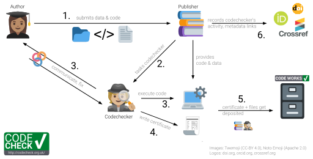

![]()

This year I was finalizing and publishing one of my own research projects. My coauthors and I took many steps to make the project as reproducible as possible.
Because I am setting up a codecheck workflow to check the reproducibility of research results for researchers at my institute, I was eager to submit my own work to the test. How reproducible would our work be when submitted to an external test?
A check for reproducibility
I submitted my work to the CODECHECK (Nüst and Eglen 2021) community workflow, which means that an external codechecker will do a light-weight reproducibility check. They will try to re-run my code to see if results reported in the paper can be reproduced.
A codecheck was the perfect opportunity for checking how reproducible our project was. At the same time, the experience of getting my own work codechecked would help in understanding a researcher’s perspective on the process. In this post, I will share my personal experience of getting codechecked. This will hopefully demystify the process for any reader new to codechecking or curious about what codecheck is all about.

The project: neuroUp
The project submitted for the codecheck was in the making for about four years - a nice example of Slow Science1. From the start of these four years, I tried to make all our scripts reproducible.
A few years ago, we started out with a couple of unconnected R scripts. Only when I started drafting the research article, I combined the draft manuscript with the project’s code and computations in one place. I first used R Markdown for this, and in the end of 2023 I switched to a similar tool now available in RStudio called Quarto. On top of this, a key tool for reproducibility was the use of Git and GitHub for version control. This helped to systematically track the evolution of the project and its code and allowed us to go back to a previous state of the code if needed.
An important phase in the project was the step from working with loosely connected R scripts to the development of an R package (we called it neuroUp). With the help of the fantastic R packages book by Hadley Wickham and Jennifer Bryan, I managed to develop my first R package out of the code for this paper. Although after having done this, I believe that for most research projects developing a custom software package is an overkill, organizing code in a package does provide a lot of benefits that make your code much more reproducible. It organizes your project according to a convention, specifies dependencies, and bundles data, code, and documentation (Marwick, Boettiger, and Mullen 2018). This means other researchers can install, cite and use the package without having to understand exactly how your code works.
When we posted the preprint for our paper, we also published a reproducible version of the manuscript online. That was the moment that we turned to the CODECHECK community workflow to check whether results were indeed reproducible, at least according to one independent codechecker who was not part of the research team.
Submitting work to be codechecked
I chose CODECHECK because they offer a journal-independent community workflow. To be honest, submitting the work was daunting at first. I hesitated because based on the instructions for authors, I thought I had to partly restructure my project and provide a new README and metadata file. Luckily, looking at some of the forked repositories in the codecheckers GitHub organization really helped. That made me realize that some were much more detailed than others and that I could suffice with just describing the files in the repository and instructions on how to run the code (I liked this example by Bjørn Bartholdy and based my README on it).
After the preparations, the procedure was straightforward. Using my GitHub account, I opened an issue on the codecheckers GitHub, which is made easy using their template issue. The only thing that confused me a little was the instruction to “link to the repository in the codecheckers organisation with the code”. Once I figured that I could also link to my own public repository that would be forked by the codechecker in the process, my project was ready to go!
After I submitted my repository for the check, the team reached out to me with some follow-up questions (the conversation is still accessible via this closed GitHub issue). The codechecker was even accomodating to get the check done before my revision deadline, so that I could reference the CODECHECK certificate in my published paper.
Getting the results of the check
After a short waiting time, I got notified with some good news: the checker was able to reproduce my work and we got a certificate (see Röseler 2024)! Of course, I was very happy. This meant that at least one other person at another moment in time was able to reproduce our work with the help of our data and code.
But, as I also experienced when I later code-checked someone else’s work (Joey Tang et al. 2024), when everything is working smoothly (eventually maybe after debugging some dependencies), the whole process is not overly exciting. The machine is doing most of the work in that case, you just see a bunch of identical images or tables appearing on your screen.
The kind of reproducibility that is checked (computational or methods reproducibility) is in the end actually quite basic. What is being checked is nothing more than a minimum but necessary condition of good and believable research: what is verified is whether the results can be independently re-run using the same data and code. Other relating concepts for reliable and trustworthy research results such as replicability, generalizibility, and robustness, may be more exciting, but require also much more effort or even new studies to check.
Final reflections
As with most things in life, preparing for the codecheck (by making sure your work is reproducible) is most of the work. Here are some key points to consider (see also these ten simple rules for reproducible research: Sandve et al. 2013):
Record all the steps taken to process and analyze your data in scripts and avoid manual steps that are harder to reproduce.
Documenting your code is key. Explain what steps are needed to reproduce the results2.
Make sure you systematically list all dependencies (software and packages).
Use tools for version control.
Use tools like Quarto, R markdown, or Jupyter notebooks. They provide a great way to share code, narrative text, and output in one document, making it much easier to clearly describe the steps that were taken to process and analyse the data.
Partial reproducibility is always better than zero reproducibility! Don’t let the perfect be the enemy of the good.
In conclusion, getting our research codechecked was a very nice experience. With just a few extra steps (providing a short metadata file, adapting our README, requesting the check), we managed to obtain a nice certificate confirming that the computations underlying our article could be independently executed. I believe this additional check - next to traditional peer review - gives a nice extra boost to the credibility of our work. We therefore happily cited the CODECHECK certificate in our paper that got published recently (see Klapwijk et al. 2025).
Did you work hard to make your research reproducible? Then definitely have it codechecked!
Acknowledgments
I would like to thank Lieke de Boer for excellent feedback on a draft version of this post.
References
Footnotes
To make me feel better about the slow pace of this project, I like to keep Uta Frith’s analogy in mind of Slow Science being equivalent to the production of quality Grand Cru wines (Frith 2020)↩︎
For an example description, see the README we wrote for the codecheck of this project: https://github.com/codecheckers/sample-size-codecheck/↩︎
Citation
@online{klapwijk2025,
author = {Klapwijk, Eduard T.},
title = {My Experience of Getting Codechecked},
date = {2025-01-16},
url = {https://doi.org/10.5281/zenodo.14651307},
langid = {en}
}